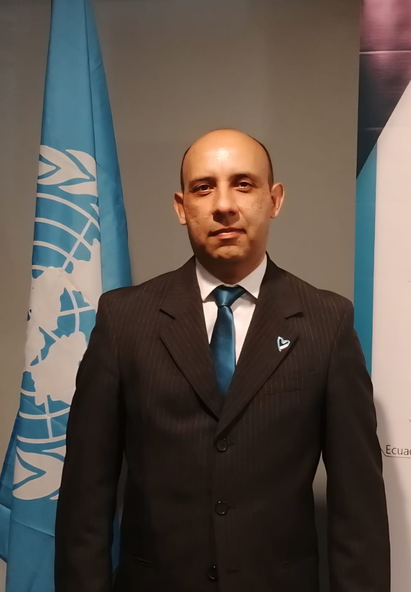

Ponente
Colombia

Deimer Meléndez Cardona
Perfilador criminal
Técnico Profesional en Policía Judicial
Técnico Profesional en Servicio de Policía
Licenciado en Criminología y Criminalística
Investigador Policial
Analista Criminal
PRESENTACIÓN
Criminólogo y Criminalista e Intendente en uso de buen retiro de la Policía Nacional de Colombia con 22 años de servicio (1995–2017),
grado de Intendente, con amplia experiencia como Investigador Policial en la Dirección de Investigación Criminal e INTERPOL (DIJIN),
en el Área de Delitos contra la Vida, Derechos Humanos y DIH. Lideró y desarrolló investigaciones complejas relacionadas con feminicidio,
homicidio, trata de personas, tráfico ilícito de migrantes, crimen organizado, terrorismo, delitos sexuales, desaparición de personas y
narcotráfico. Fue cofundador del Grupo de Ciencias del Comportamiento y Perfilación Criminal de la DIJIN, implementando el enfoque de Análisis
de la Evidencia Conductual, y se desempeñó como analista conductual y perfilador criminal en la Fiscalía General de la Nación.
A nivel internacional, trabajó como Investigador Policial Internacional y Analista Criminal para la Comisión Internacional
contra la Impunidad en Guatemala (CICIG) de Naciones Unidas (2015–2019). Ha sido consultor para agencias y organismos
internacionales en Centro y Suramérica en materia de investigación criminal y fortalecimiento institucional, actualmente colaborando
con Justice Education Society (Canadá) en proyectos para el fortalecimiento del sector justicia y el combate a la trata de personas y
el crimen organizado en el Triángulo Norte de Centroamérica. Cuenta con formación especializada impartida por el FBI, la Real Policía
Montada de Canadá, UNODC, ICITAP, KOICA y otras entidades internacionales, y ha ejercido como docente y conferencista en investigación
criminal, análisis conductual y perfilación criminal. y es autor de diversas publicaciones en materia de perfilación e investigación
criminal, destacándose su obra más reciente: Perfilación Criminal Práctica.